Unidade 2: o espaço transformado. Entenda por que as pessoas migram do campo para a cidade, como campo e cidade se relacionam e como funcionam os setores da economia.
👨🌾 Êxodo rural🏙️ Vida urbana🏭 Setores da economia
Seu progresso0%
✅ 0 respondidas⭐ 0 corretas
🚜
SEÇÃO 1
Do campo para a cidade
Por que tantas pessoas deixaram o campo para viver nas cidades?
🚶 Por que as pessoas se deslocam?
São vários os motivos que levam pessoas e famílias a se deslocar, seja dentro do próprio país, seja entre um país e outro. Alguns se deslocam em busca de emprego e de melhores condições de vida, enquanto outros são obrigados a fazer isso devido a conflitos e desastres naturais no lugar onde vivem.
Um tipo de deslocamento muito importante é o chamado êxodo rural, quando as pessoas deixam o campo para viver nas cidades. Considerado uma migração, ele é motivado por vários fatores. Os mais comuns são a existência de mais empregos nas áreas urbanas e sua melhor infraestrutura, como maior oferta de serviços de saúde e de escolas.
O êxodo rural é um traço marcante das migrações brasileiras. O desenvolvimento industrial de cidades como São Paulo e Rio de Janeiro, nas décadas de 1940 e 1950, atraiu muitas pessoas do campo. Esse processo se acelerou nas décadas seguintes e, nos anos 1970, a população urbana brasileira se tornou maior que a rural.
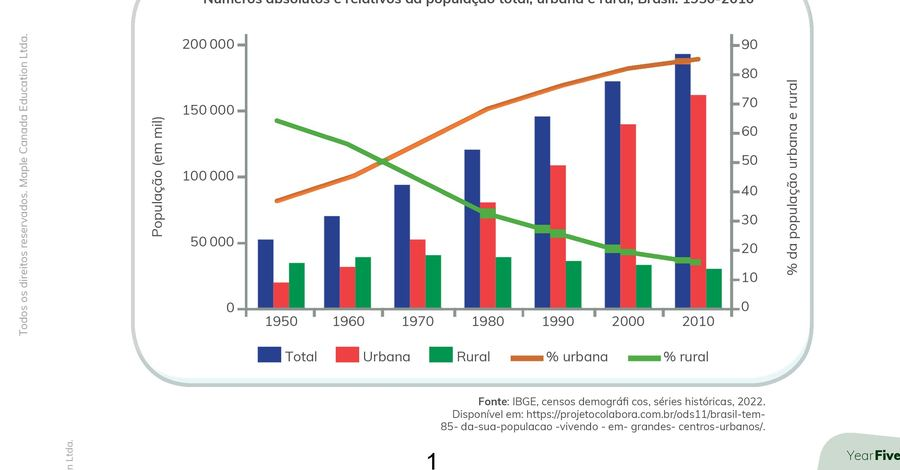
Números absolutos e relativos da população total, urbana e rural, Brasil: 1950-2010. Fonte: IBGE, censos demográficos, séries históricas, 2022.
🏗️ A Revolução Industrial e a mudança para a vida urbana
Esse processo de mudança do campo para a cidade se intensificou ainda mais a partir da Revolução Industrial, no final do século XVIII, principalmente na Europa. Antes disso, a maioria das pessoas vivia no campo e trabalhava na agricultura, criando animais e plantando alimentos para sobreviver.
Com a chegada das indústrias, surgiram novas oportunidades de emprego nas cidades, o que atraiu muita gente. As fábricas precisavam de muitos trabalhadores, e as pessoas acreditavam que nas cidades teriam uma vida melhor, com mais trabalho e acesso a serviços como escolas e hospitais.
Os efeitos dessa mudança foram muitos. Entre os principais, podemos destacar:
Crescimento das cidades: muitas cidades cresceram rapidamente e, com isso, surgiram problemas como a falta de moradia, transporte e saneamento básico.
Mudanças no estilo de vida: a vida na cidade passou a ser mais corrida e menos ligada à natureza. As pessoas começaram a depender mais do comércio e dos serviços urbanos.
Transformações no campo: com menos pessoas no campo, a agricultura passou a usar mais máquinas para manter a produção de alimentos.
Desigualdade social: nem todos conseguiram boas condições de vida nas cidades, e muitos acabaram vivendo em áreas pobres e com pouca infraestrutura.
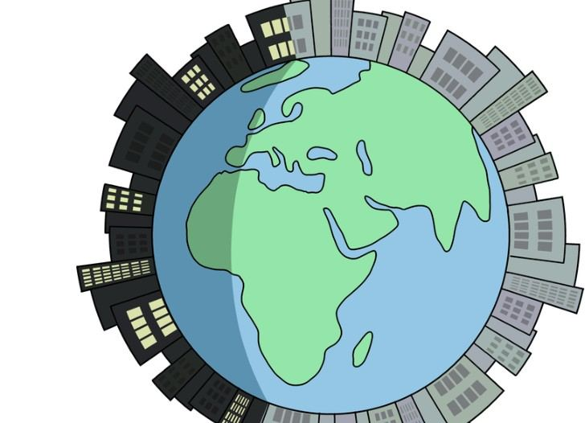
Com o crescimento das cidades, muitas pessoas deixaram o campo em busca de trabalho nas manufaturas e, depois, nas fábricas.
🗺️ Dois exemplos: Europa no século XVIII e Brasil no século XX
🏭 Europa no século XVIII
Busca por empregos em fábricas.
Jornadas longas de trabalho.
Propriedades urbanas.
Péssima qualidade de vida no início (melhoria com o passar do tempo e o crescimento da infraestrutura).
Mudança para um modo de vida mais acelerado e industrial.
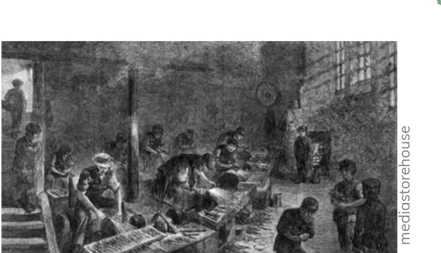
Fábrica europeia do século XVIII, período da Revolução Industrial.
🇧🇷 Brasil no século XX
Necessidade de desenvolvimento.
Contexto atrasado se comparado com os Estados Unidos e a Europa.
Início dos investimentos em indústrias a partir de 1929.
Com o fim da Segunda Guerra Mundial, buscando novas oportunidades, muitas pessoas migraram do campo para a cidade.
O Nordeste e outras regiões do país também passaram por momentos delicados, e isso contribuiu para o êxodo rural brasileiro.
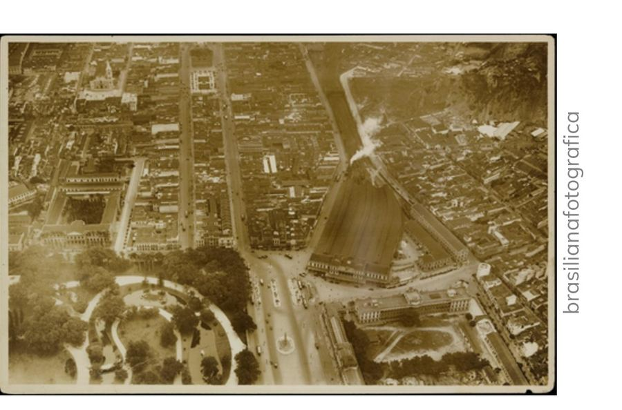
Vista aérea de área urbana brasileira em industrialização no século XX.
📚 Vocabulário
Êxodo rural: processo de migração que envolve grande quantidade de pessoas que saem do campo e se mudam para a cidade.
Infraestrutura: conjunto de serviços e estruturas essenciais para o desenvolvimento de um lugar.
Revolução Industrial: período de grande desenvolvimento tecnológico que teve início na Inglaterra a partir da segunda metade do século XVIII e que se espalhou pelo mundo, causando grandes transformações.
🎯
Pratique • Seção 1
5 questões sobre o êxodo rural e a Revolução Industrial.
🔗
SEÇÃO 2
A relação entre o campo e a cidade
Campo e cidade dependem um do outro e trocam produtos, serviços e pessoas o tempo todo.
🏙️ Cidades que se relacionam entre si
As cidades e seus moradores se relacionam e se influenciam a todo momento. Uma mercadoria pode ser produzida em uma cidade e ser comercializada em outra. Uma pessoa pode viver em uma cidade e trabalhar em outra.
É comum que haja uma cidade maior, economicamente importante, que influencie as cidades vizinhas. Essa cidade maior pode compartilhar com as demais, por exemplo, serviços de transporte e redes de distribuição de água. Devido a sua importância perante as outras, ela é chamada de metrópole. A área que abrange essa cidade e suas vizinhas é chamada de região metropolitana.
🌾 Modo de vida no campo
No campo, as famílias produziam grande parte do que consumiam. O trabalho era realizado manualmente e seguia o ritmo das estações do ano. As comunidades costumavam ser pequenas e as relações entre as pessoas eram mais próximas. A vida rural também era marcada pela forte influência dos proprietários de terras e da Igreja.
As principais características desse modo de vida eram:
Trabalho agrícola;
Produção para subsistência;
Uso de ferramentas simples;
Rotina ligada à natureza e às colheitas;
Pouca circulação de mercadorias e pessoas.
É muito comum, também, haver pessoas que vivem no campo, mas se deslocam todos os dias em direção às cidades para trabalhar, estudar e realizar atividades. Além disso, o turismo rural atrai habitantes das cidades.
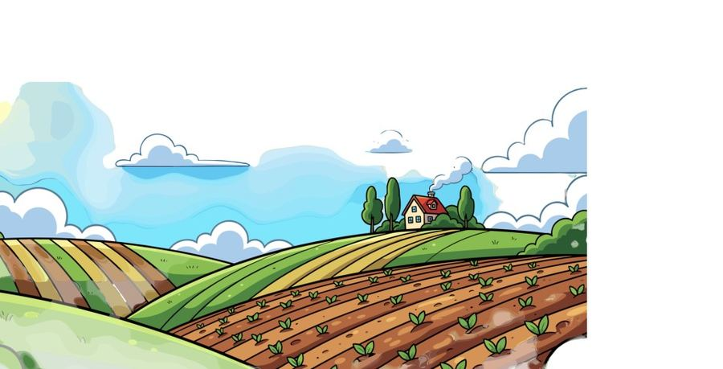
Modo de vida no campo: produção ligada às estações do ano e às colheitas.
🏗️ Mudança para o modo de vida urbano
Nas cidades, o trabalho passou a ser mais dividido e especializado; aumentou o comércio; surgiram fábricas e indústrias; a vida tornou-se mais acelerada; e houve crescimento populacional urbano. Apesar das oportunidades de trabalho, as cidades também apresentavam problemas, como moradias precárias, excesso de pessoas e más condições de higiene.
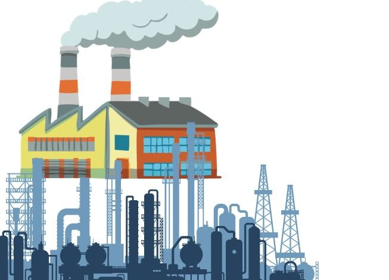
Surgimento de fábricas e indústrias nas cidades.
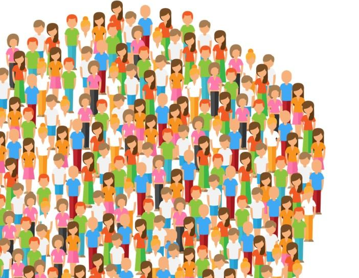
Crescimento populacional urbano.
🔄 Uma troca de mão dupla
Mesmo sendo diferentes, o ambiente urbano (cidade) e o ambiente rural (campo) dependem um do outro e se complementam de várias maneiras. Essa troca é importante para que a sociedade funcione bem.
Como o ambiente urbano contribui para o rural:
Tecnologia e conhecimento: as cidades concentram centros de pesquisa, universidades e empresas que desenvolvem máquinas, sementes melhoradas e técnicas agrícolas.
Serviços e produtos: o campo depende da cidade para serviços como hospitais especializados, bancos, mercados e transporte.
Industrialização: alimentos e matérias-primas produzidos no campo (como leite, algodão e cana-de-açúcar) muitas vezes são levados para as cidades, onde passam por processos industriais.
Como o ambiente rural contribui para o urbano:
Alimentação: a maior parte dos alimentos que chegam às casas, feiras e supermercados das cidades vem do campo — frutas, verduras, carnes, grãos e muito mais.
Matéria-prima: o campo fornece recursos essenciais para a indústria urbana, como madeira, couro, lã, leite e minérios.
Equilíbrio ambiental: as áreas rurais, com sua vegetação e menor poluição, ajudam a manter o equilíbrio do clima, a qualidade da água e do ar.
🎯
Pratique • Seção 2
5 questões sobre a relação entre o campo e a cidade.
🏭
SEÇÃO 3
Setores da economia
Como as atividades econômicas são divididas em setor primário, secundário e terciário.
💼 O que são atividades econômicas?
Todas as atividades desenvolvidas pelo ser humano para a obtenção de produtos, bens ou serviços destinados a atender às necessidades e aos desejos da sociedade são atividades econômicas. As atividades econômicas podem ser divididas em três grandes setores, levando em consideração os recursos utilizados, o modo de produção e os produtos criados.
🌱 Setor primário: onde tudo começa
O setor primário diz respeito à exploração e ao uso de recursos naturais, caracterizando-se por produzir matéria-prima para os demais setores, tanto para o consumo como para a indústria de transformação elaborar os produtos industrializados. O setor primário é composto das atividades agropecuárias (agricultura e pecuária) e do extrativismo (mineral, vegetal e animal).
O trabalho nesse setor passou por grandes transformações ao longo da história. Hoje, há o uso de técnicas tanto tradicionais quanto modernas: na agropecuária, o uso de ferramentas como pás e enxadas, e de animais para puxar arados, é muito antigo, mas nas grandes propriedades predomina o uso de tratores e colheitadeiras. O extrativismo vegetal (coleta de castanhas e extração de látex) ainda é feito manualmente, mas a extração de madeira já usa grandes máquinas. O extrativismo animal, como a pesca, é realizado de modo artesanal e industrial. O extrativismo mineral ainda utiliza técnicas tradicionais para extrair ouro e outros minerais.
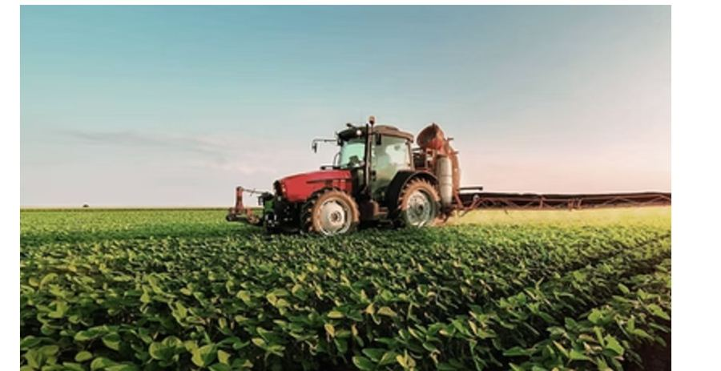
Setor primário: agricultura mecanizada em uma grande propriedade rural.
O que é matéria-prima? É o elemento natural básico usado para fabricar outras coisas.
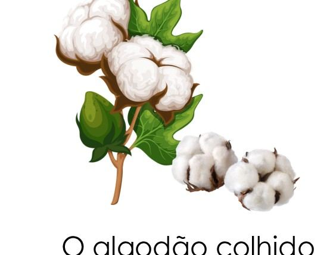
O algodão colhido no campo.
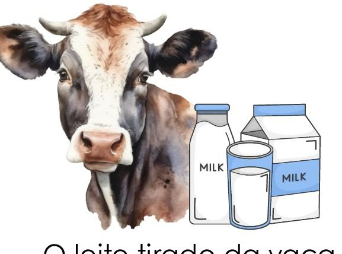
O leite tirado da vaca na fazenda.
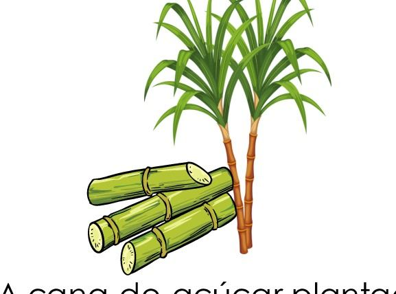
A cana-de-açúcar plantada no interior de Alagoas.
🏭 Setor secundário: a transformação
O setor secundário compreende a geração de energia, a construção civil e, principalmente, a indústria. Nesse setor, a matéria-prima obtida no setor primário é transformada e utilizada para a fabricação de diversos produtos.
A indústria nasceu no século XVIII, na Inglaterra, na chamada Revolução Industrial. Diversas atividades, que antes eram realizadas apenas artesanalmente, passaram a ser executadas por máquinas em uma linha de produção. Com o avançar dos séculos, a indústria foi se modernizando com a transformação das técnicas e das máquinas, ganhando velocidade e eficiência na fabricação de produtos. No entanto, as máquinas não executam o trabalho sem a ajuda humana: elas precisam de manutenção e de pessoas que as operem e controlem.
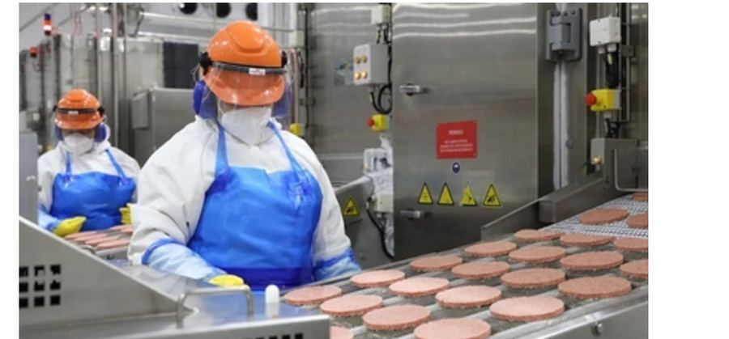
Setor secundário: trabalhadores em uma indústria alimentícia.
O que é produto industrializado? É o produto final, modificado pelas máquinas e pelo trabalho humano nas fábricas.
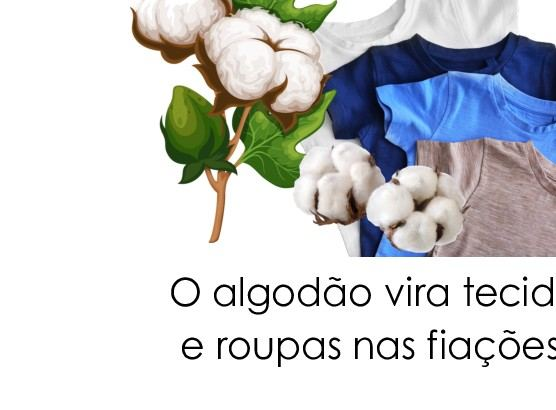
O algodão vira tecido e roupas nas fiações.O leite vira queijo ou iogurte na laticínio.
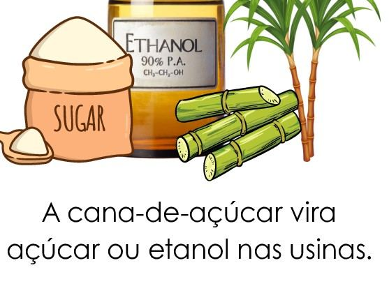
A cana-de-açúcar vira açúcar ou etanol nas usinas.
🛒 Setor terciário: a chegada ao consumidor
O setor terciário constitui-se do comércio e da prestação de serviços. Como atividades econômicas desse setor há turismo, educação, comércio, saúde, comunicação, transportes, serviços públicos, manutenção e limpeza.
Atualmente, é o maior setor da economia brasileira e concentra a maior parte dos trabalhadores do país. O setor terciário representa a última etapa do processo produtivo, ou seja, o que é produzido nos setores primário e secundário chega aos consumidores pelo comércio, setor responsável pela venda das mercadorias.
Setor terciário: comércio e prestação de serviços chegam ao consumidor.
O que engloba? Lojas, supermercados, feiras, escolas, hospitais, hotéis e motoristas de aplicativo.
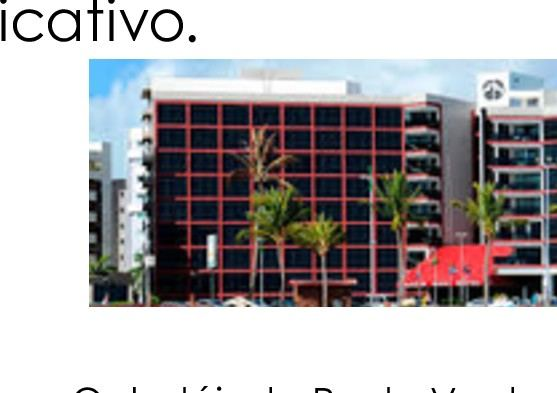
Hotéis que atendem os turistas (prestação de serviço).